4 Maps
To build a flexible system for mapping cruise data, we have the following functions:
Publishable maps
Base maps
Begin with a basic map, including EEZ borders:
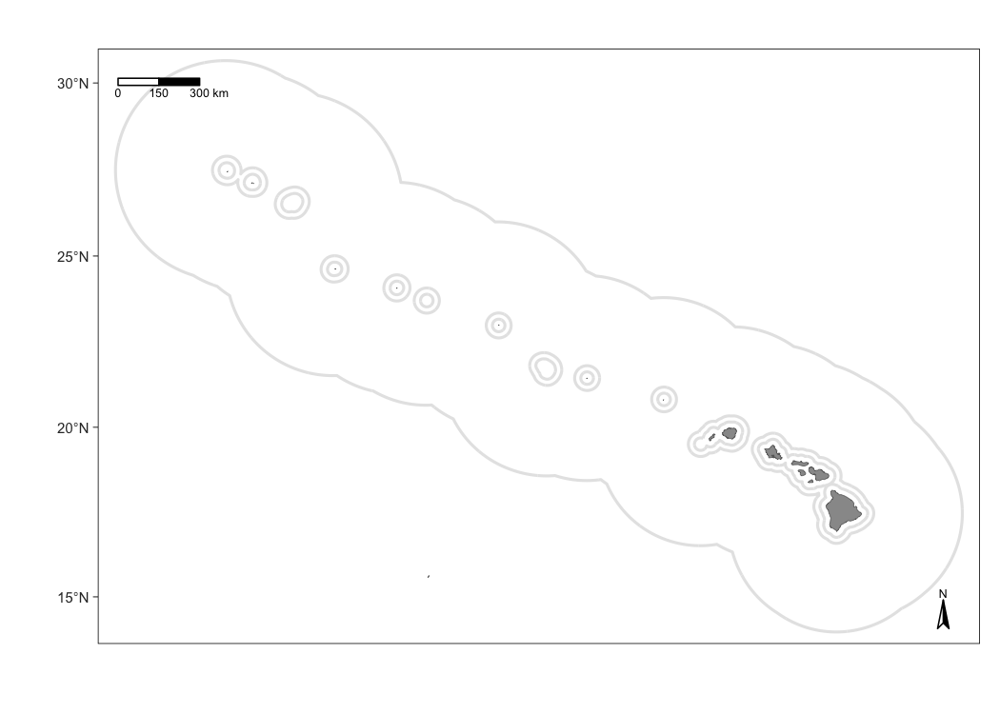
We also have a base map for the California Current …
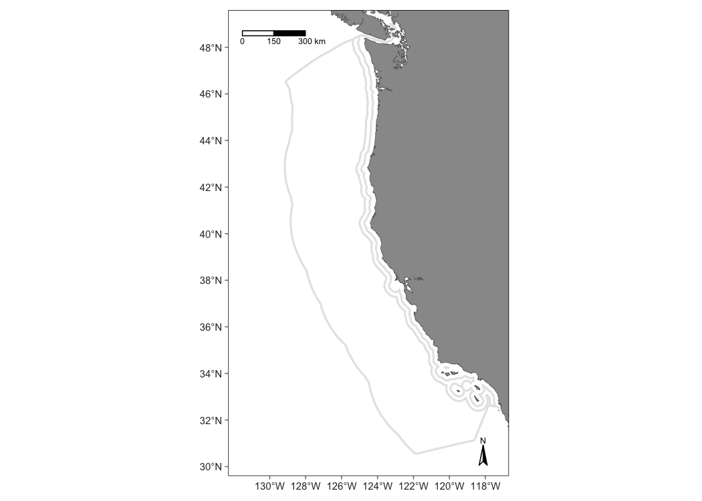
And the ETP:
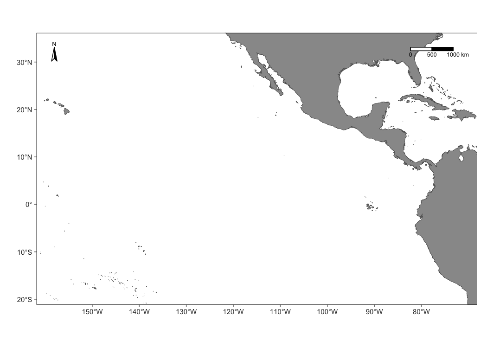
Add survey tracks
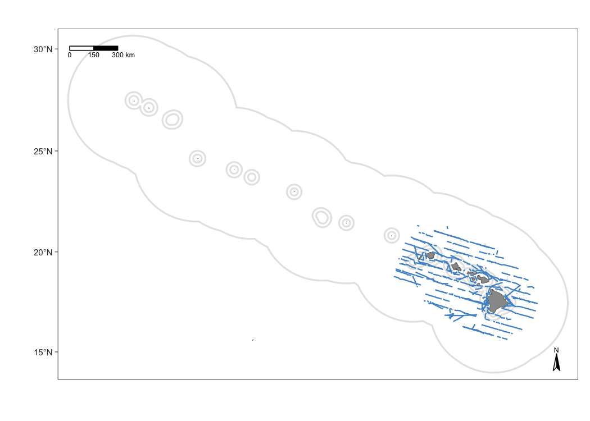
The defaults of map_effort() assume, for simplicity, that you want to see the segments to be included in density estimation for the first cohort specified in your settings. You can adjust this and other defaults using the function arguments.
Customizing effort
Color-code conditions
Your second customization option is to add format variables to the segments slot of the cohort of interest in the cruz object. This gives you full control of line color, thickness, and line-type according to whatever specifications you wish to set, e.g., color-coding by effort type or Beaufort sea state.
This is possible because the function map_effort() looks for the variables col (line color), lwd (line thickness or stroke), and lty (line type) in the columns of cruz$segments. If these columns exist, the values therein will be used instead of the function defaults.
For example, color-code by Beaufort scale:
# Save copy of segments to modify
cruzi <- cruz_1720
segments <- cruzi$cohorts$all$segments
# Add column `col`: color code by BFT sea state
bft_colors <- c('steelblue4','steelblue2','cadetblue1','grey')
segments$col <- bft_colors[4]
segments$col[ segments$avgBft <= 7 ] <- bft_colors[3] # bft 5 +
segments$col[ segments$avgBft <= 4 ] <- bft_colors[2] # bft 3 - 4
segments$col[ segments$avgBft <= 2 ] <- bft_colors[1] # bft 0 -2
# Update sub_segments slot in `cruz` object
cruzi$cohorts$all$segments <- segments
# Update map
m_custom2 <- map_effort(m, cruzi)
# Add legend using native functions from mapping package `tmap`
m_custom2 <-
m_custom2 +
tmap::tm_add_legend('line',
col = bft_colors,
lwd = 3,
labels = c(' 0 - 2',
' 3 - 4',
' 5 +',
' no data'),
title="Beaufort sea state") +
tmap::tm_layout(legend.position=c('left','bottom'))
# Show map
m_custom2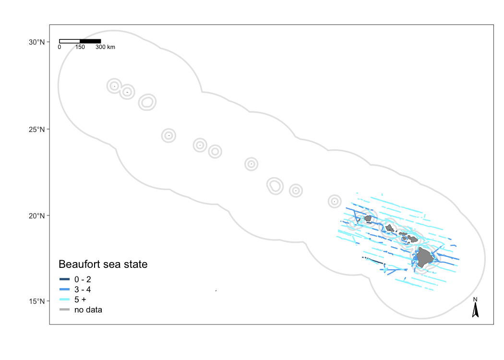
Add sightings
Use the function map_sightings() to add sightings to your map:
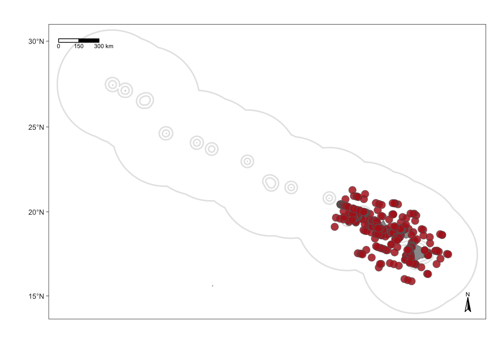
Customizing sightings
To demonstrate some of the customization options, consider this map that shows sightings of false killer whales with custom dot color, shape, and size:
m1 <- map_sightings(m,
cruz_1720,
include_species = '033',
color_base = 'purple',
shape_base = 18,
size_base = 1)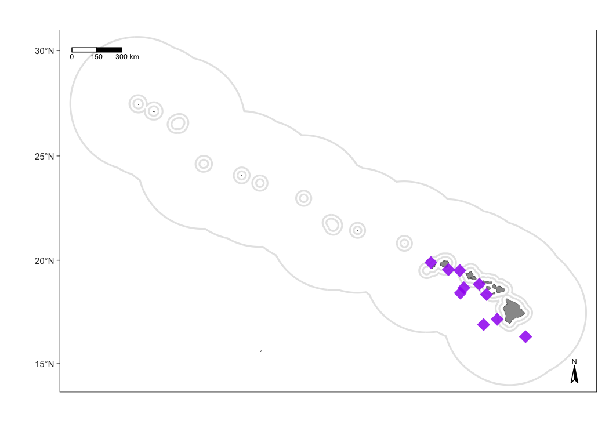
Next is a map of humpback whales and sperm whales, color-coded by species and shape-coded by whether or not the sighting will be included in the analysis:
m1 <- map_sightings(m,
cruz_1720,
include_species = c('076','046'),
color_code = TRUE,
shape_code = TRUE)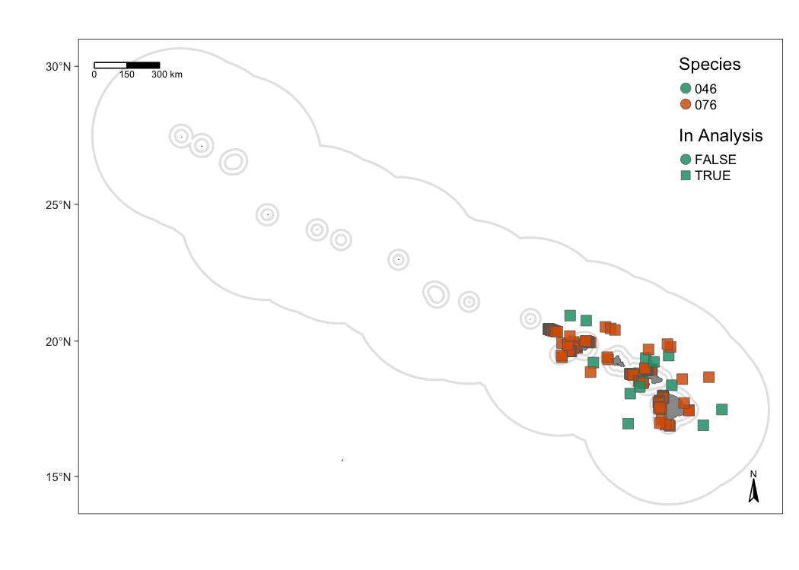
Interactive maps
LTabundR also has an interactive map function, which maps survey data using the leaflet package.
map_cruz(cruz_1720,
cohort=1,
eez_show=FALSE,
strata_show=FALSE,
effort_show=TRUE,
effort_resolution=1,
sightings_show=TRUE,
sightings_color = 'firebrick',
verbose=FALSE)Note that you can also click on sightings and tracklines to see their details. Refer to the documentation for this function (?map_cruz) to see all the options available for stylizing these maps.
Interactive dashboard
Finally, note that LTabundR comes with an interactive data explorer app (a Shiny app) for filtering survey data according to effort scenario and species code, toggling map_cruz() settings, and reviewing summary tables of effort and sightings (including inspection of truncation distances).
Screenshots from this app:
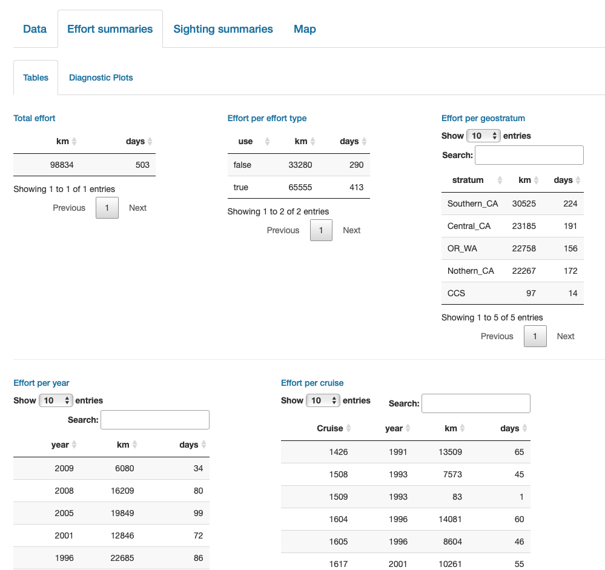
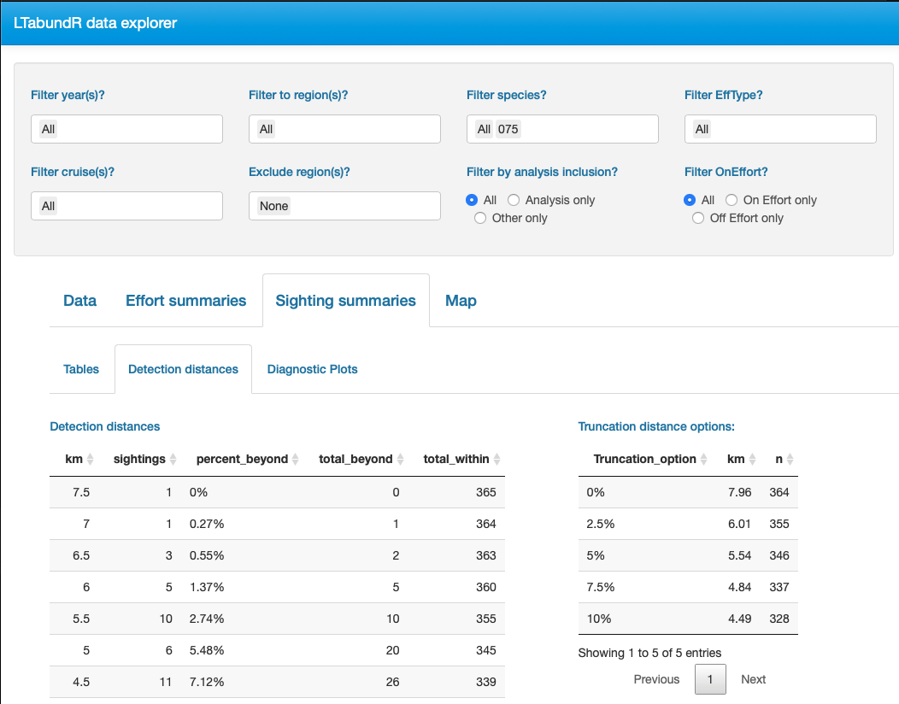
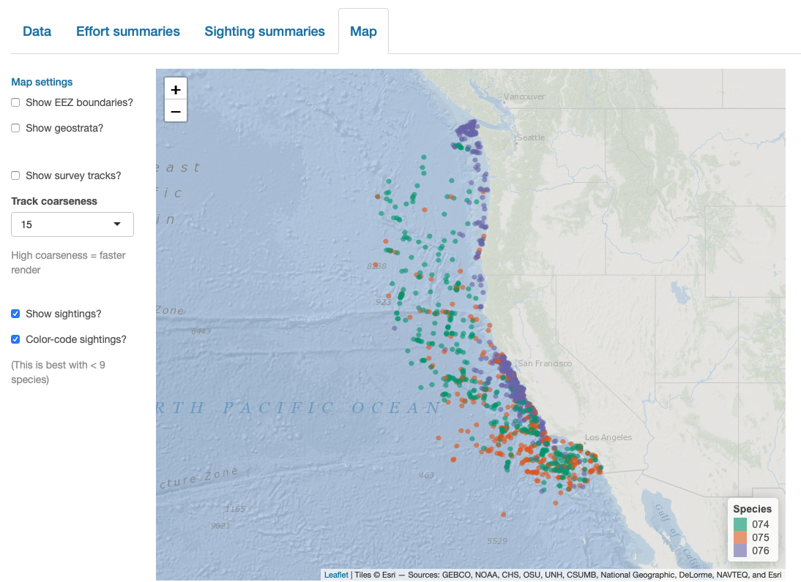
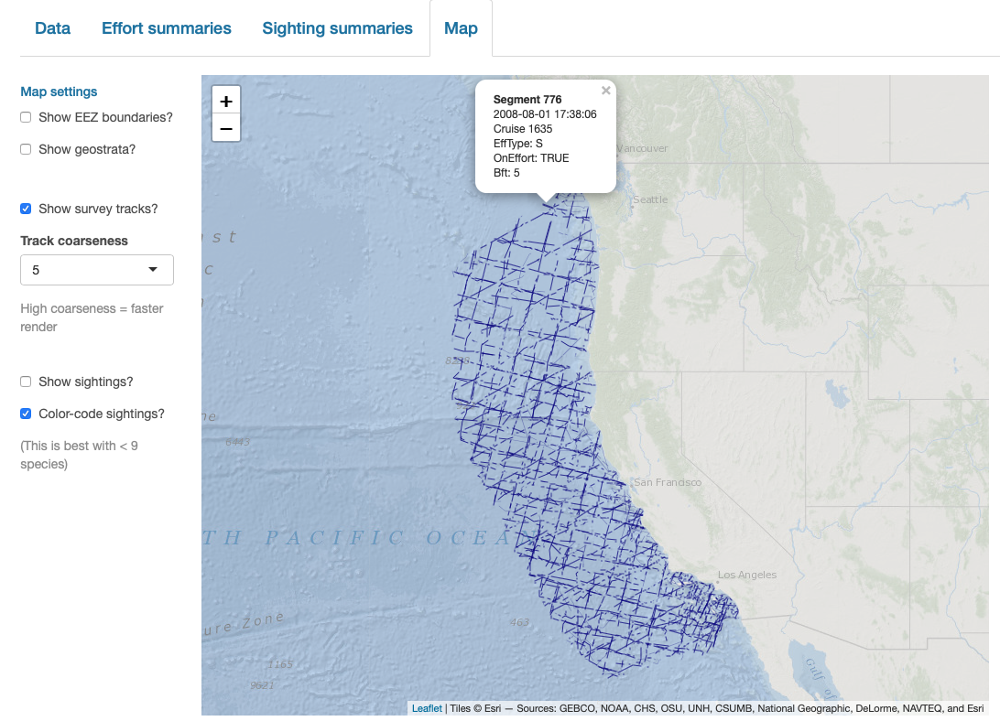